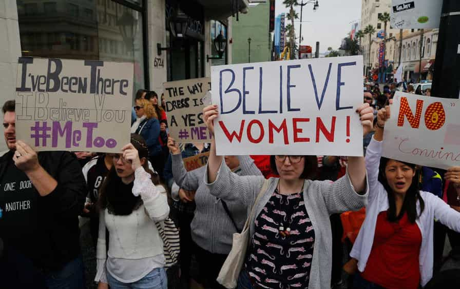
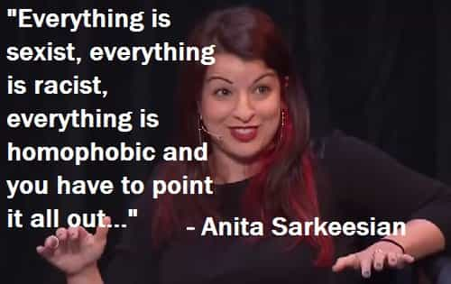

The National Labor Relations Board (NLRB), an independent US government agency, has accused fired Google engineer James Damore of “sexual harassment” for mentioning scientific studies about gender and IQ distribution. Damore, who wrote a now famous memo critiquing enforced gender and other diversity, filed a complaint with the NLRB but later withdrew it in favor of a lawsuit alleging systemic discrimination against (white) males at Google.
An attorney for the NLRB agreed with Google’s firing of Damore and attacked him for his scientifically uncontroversial references to women being more prone to neuroticism and showing less general interest in technology (even as infants). He was further denounced for contributing to a “hostile work environment” that supposedly caused two female candidates for engineering positions to withdraw their job applications (but how could they have handled the job if one man discussing scientific papers is enough to trigger them?). The letter makes for chilling reading and I recommend everyone look at it in its entirety.
Dr. Jordan B. Peterson summed up the situation perfectly:
Debating science = asking a girl out on a date = touching her breasts = rape

Everything feminists don’t like is sexual harassment.
As I and other ROK authors have repeatedly said, actual sexual harassment is consistently conflated with merely approaching a woman for a conversation or to ask her out on a date. Now it appears that those discussing biology and other forms of science will also be in danger of being described as sexual harassers when such talk offends women, leading to more men like Damore losing their jobs.
Associate General Counsel in the NLRB’s Division of Advice, Jayme L. Sophir (of course, a woman), wrote the following in a recently published letter:
…the statements regarding biological differences between the sexes were so harmful, discriminatory, and disruptive as to be unprotected.
Mentioning facts that do not support SJW ideology is going to get you in serious trouble in today’s political and social climate. Be warned.
IQ measurements are deeply “misogynistic,” right?
Although scientific inquiry involves debates about competing findings and theories, Damore’s memo claims were firmly rooted in proven science, much more so than his critics. Many of his assertions, especially about matters like IQ distribution between the genders, are not just assertions but established facts. Like Damore, social psychologist Roy F. Baumeister, who wrote the book Is There Anything Good About Men?, points out that men are akin to nature’s big experiment, meaning larger numbers of men exist in both the genius and mentally disabled categories. Women, by contrast, cluster in the middle for IQ distributions.
Working in senior engineering positions for Google should require high levels of intelligence and industriousness. Yet systems for hiring and cultivating the best candidates have been greatly undermined by calls for gender and racial quotas. Discussion about IQ distributions imperils the leftist narrative. Just as boys predominate in the highest SAT scores (despite generally preparing for exams far less), in an unbiased environment more men will be working in engineering positions at Google. But no, feelz over logic and facts.
Where to next?

If the position of the National Labor Relations Board regarding James Damore is repeated in other circumstances, which seems likely, we are in for some wild times indeed. The ideologies once considered radical are infecting our labor and other laws in the West. Science is deemed offensive to the powers that be, whether at Google or in the upper echelons of SJW governments like California’s. So what whacky thing is next?
Whilst some of us had high hopes for James Damore’s class action lawsuit, I am currently unconvinced that he will win. When notions like “hostile work environment” are being gerrymandered to substitute feminist feelz for objective realities, Damore is probably only preparing himself for a very time-consuming legal failure.
Read More: James Franco’s Sexual Harassment Accuser Is An Attention-Seeker Who Makes “Jokes” About Raping Children